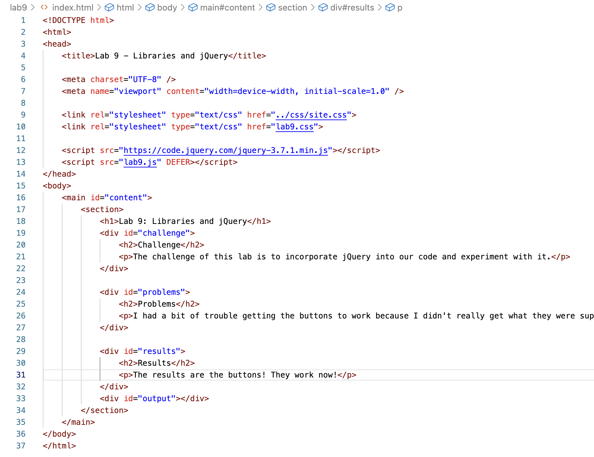
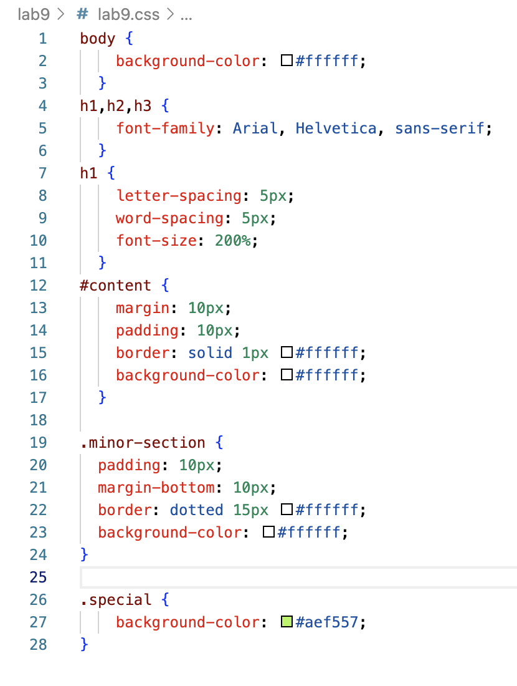
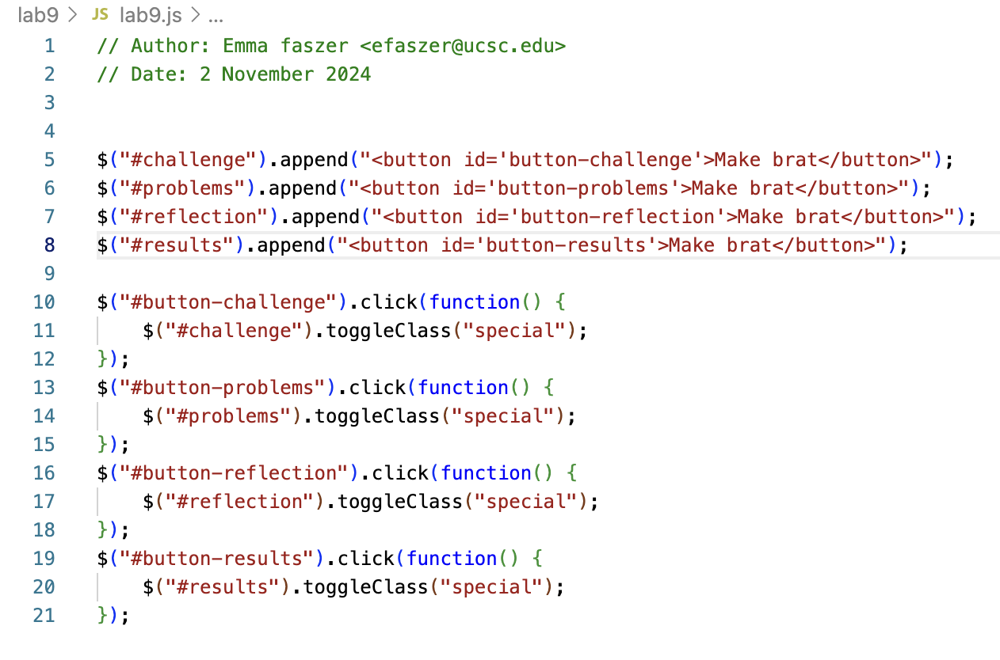

Lab 14: Debugging Tools and Strategies
Challenge
The challenge of this lab is to go back and debug any issues we had with our javascript in previous labs.
Problems
I previously had issues with lab 9 so I decided to go back and fix that with the help of my partner and WesBot to catch issues with my code that I probably wouldn't have caught without them as a tool. It turns out I literally just hadn't added a css section for the button to use to change the visuals of the site.
Debugging
  For this lab I had to redo it by adding to my css to include a section that would be activated by the buttons in the javascript code. I made it so that the color changes when the button is activated.